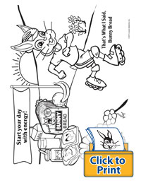
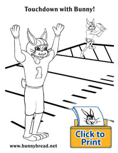
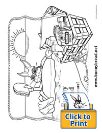

Home
Products
Nutrition
Coloring Pages
Storytime
Bunny Was Bored
Bunny Makes Deliveries
Bunny Makes a Snack
Making Bread
Bunny Takes a Hike
Bunny Bread Coloring Pages
Ask your parents to help you save these PDF versions of our coloring sheets to print off and color.


